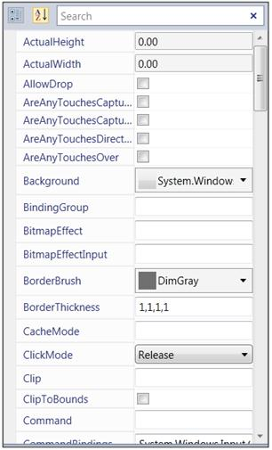

The user can populate the properties of selected object using XAML.
The following code snippet shows how to create the PropertyGrid control in XAML.
|
[XAML] <syncfusion:PropertyGrid Name="propertyGrid1" Height="500" Width="300" >
<syncfusion:PropertyGrid.SelectedObject> <Button/> </syncfusion:PropertyGrid.SelectedObject>
</syncfusion:PropertyGrid>
|
In the above code snippet, the Button is set as SelectedObject for the PropertyGrid; thus, the PropertyGrid shows all the properties available in the Button.
This will create the property as shown in the following screenshot:

Figure 811: PropertyGrid with SelecedObject